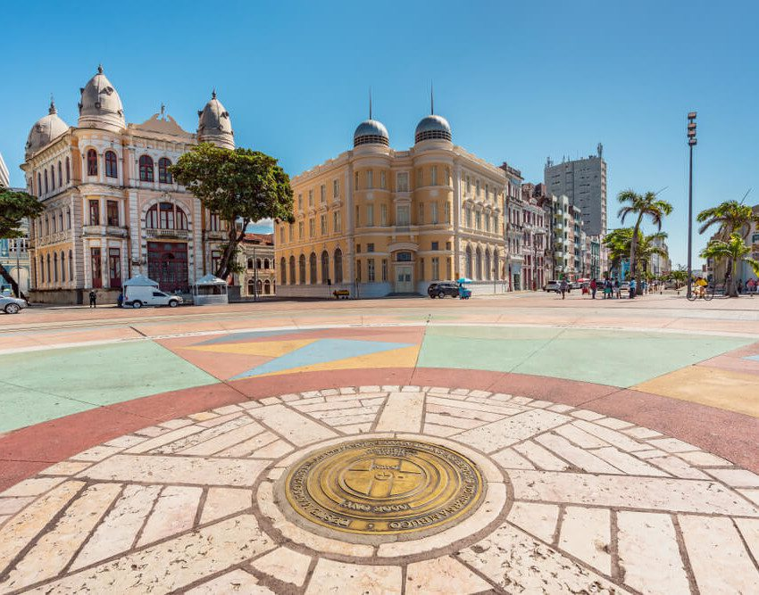

Aqui você encontra as melhores sugestões de atividades.

Fotografar a paisagem: O Marco Zero oferece uma vista incrível do rio Capibaribe e do Porto do Recife, além da arte urbana e esculturas ao redor, como o Parque das Esculturas de Francisco Brennand.
O Centro de Artesanato de Pernambuco: Localizado próximo ao Marco Zero, o centro exibe peças artesanais de todo o estado, sendo uma ótima oportunidade para conhecer a cultura local e comprar lembranças.
Um passeio de catamarã: Aproveite para fazer um passeio de barco pelos rios e canais do Recife, conhecido como a “Veneza brasileira”, partindo do Marco Zero. É uma forma única de ver a cidade sob uma nova perspectiva.
O Cais do Sertão: Um museu interativo próximo ao Marco Zero, que celebra a cultura e as tradições do sertão nordestino, com exposições sobre o famoso músico Luiz Gonzaga.
A eventos culturais: O Marco Zero é palco de shows e festivais, especialmente durante o carnaval e outras festividades populares. Consulte a agenda local para aproveitar algum evento enquanto estiver lá.
Pelo Recife Antigo: A partir do Marco Zero, explore o bairro histórico, repleto de construções antigas, igrejas, galerias de arte e bares tradicionais.
O pôr do sol: O Marco Zero é um ótimo lugar para relaxar e assistir ao pôr do sol, enquanto aprecia a movimentação do porto e do rio Capibaribe.